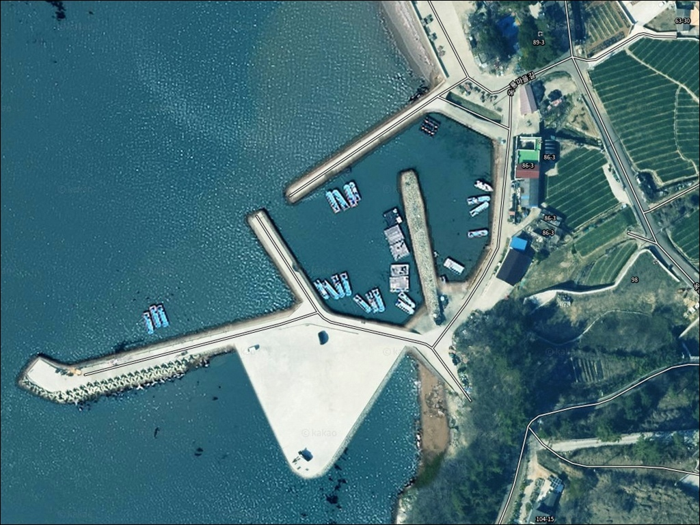
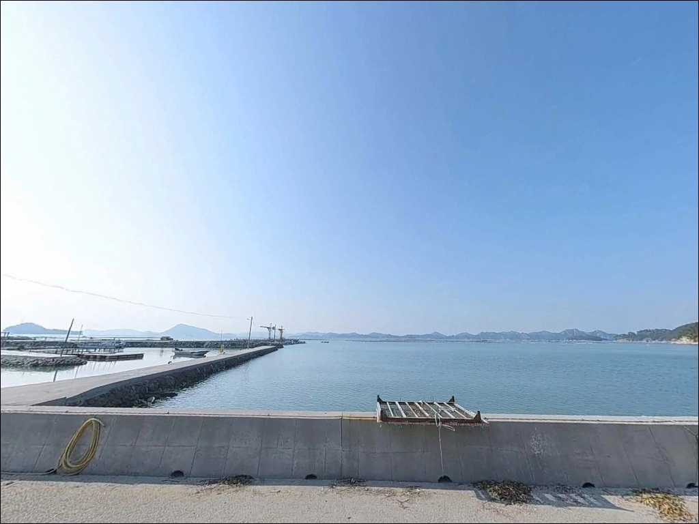
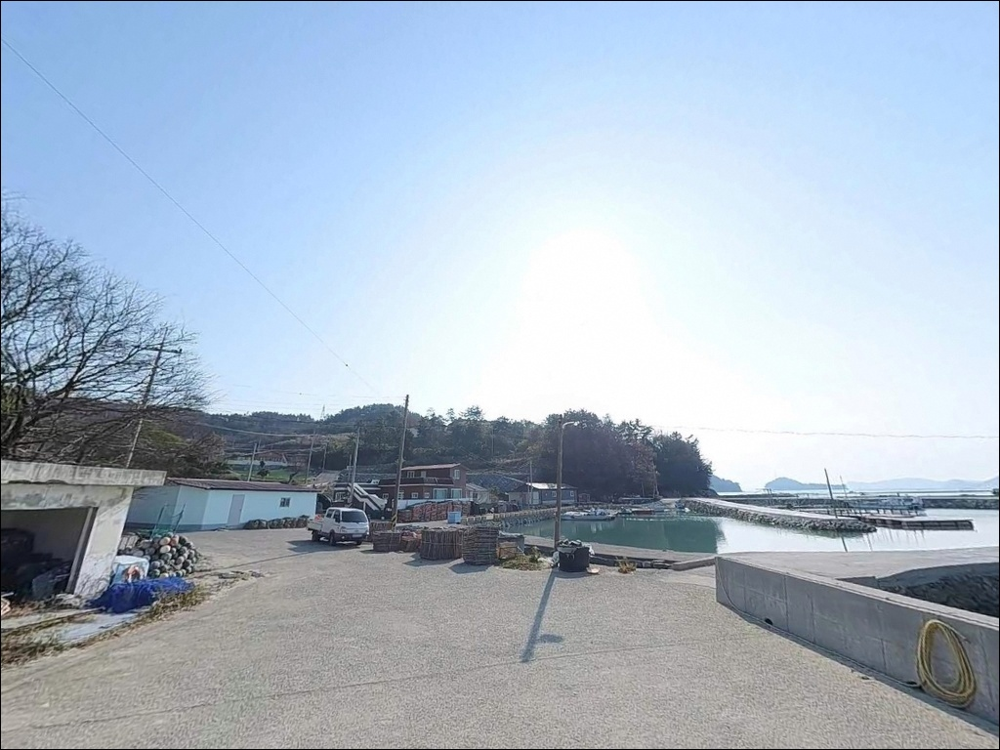
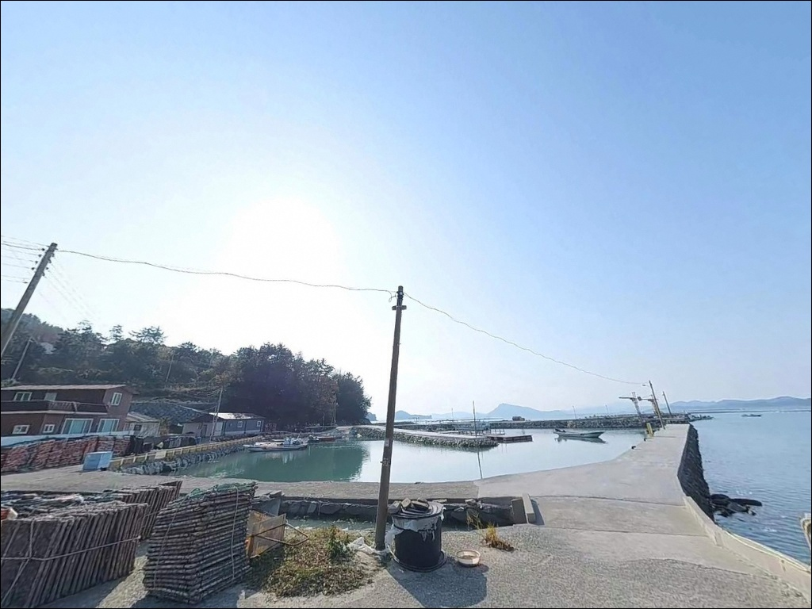
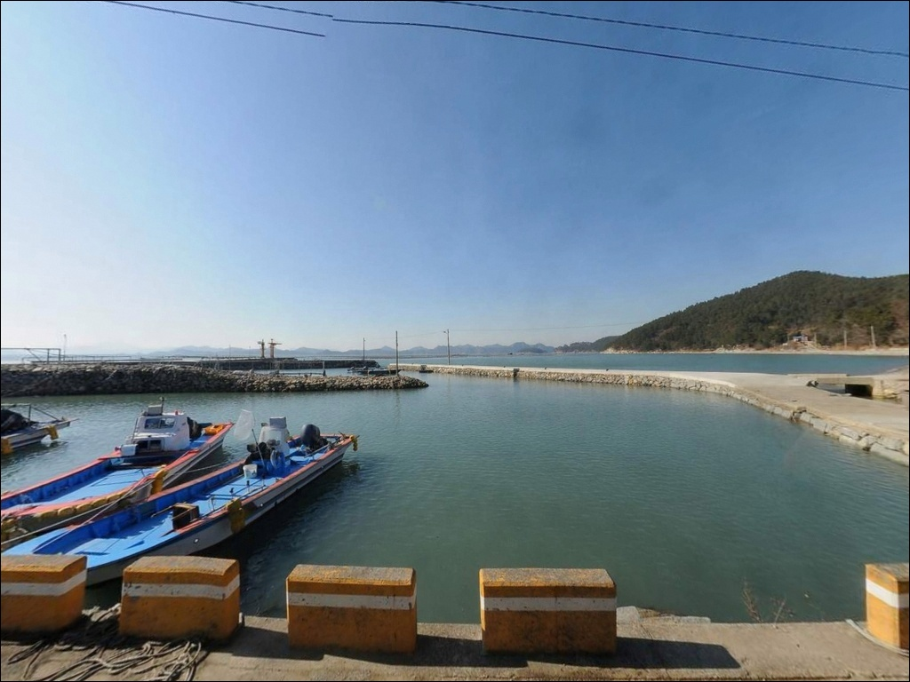
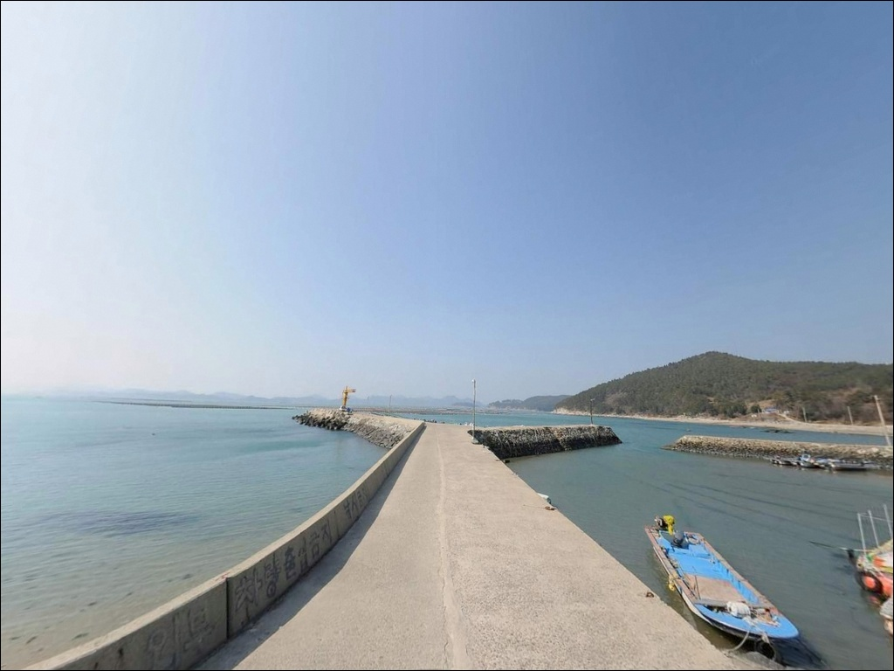
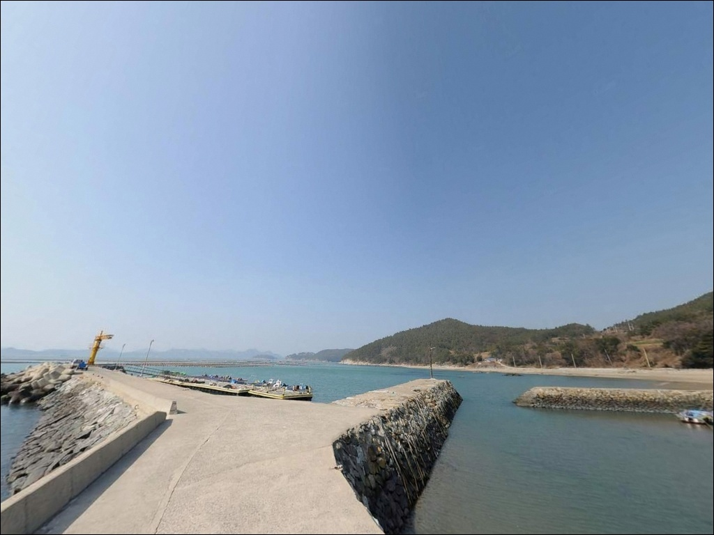
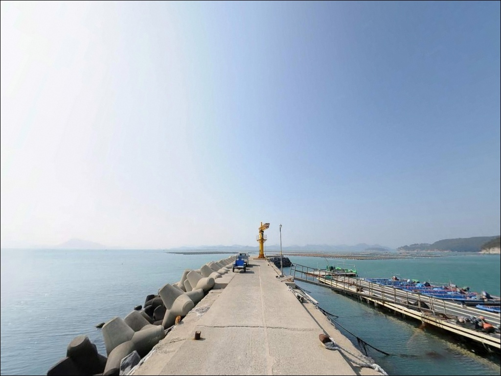
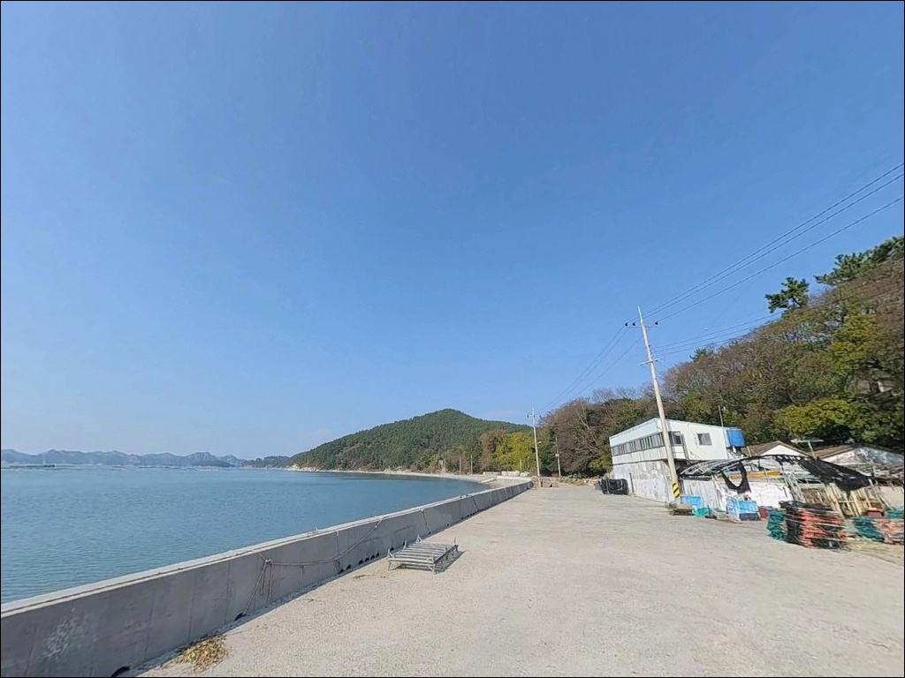

이 페이지에는 광고(제휴 링크 포함)가 있으며, 광고 링크를 통해 구매하면 운영자가 판매 수익 또는 수수료를 받을 수 있습니다. 포인트 사진: 카카오맵 스카이뷰·로드뷰. 이 페이지의 지도·사진 이미지는 카카오맵의 실제 서비스 이미지와 다를 수 있습니다.

어전리방파제
전남 고흥군 금산면 어전리 474-1
어전리에는 방파제가 3개 나란히 있습니다.
그중 낚시 자리가 되는 곳은
가장 바깥쪽 큰 방파제입니다.
나머지 안쪽 방파제에 자리를 잡으면
수심도, 조류도, 어종 구성도
전혀 다른 환경이 됩니다.
외항 쪽 수심은 끝단 기준 7~10m 내외이며,
전방 15~20m 지점에 수중여와
유실 테트라포드가 깔려 있어
감성돔과 볼락이 붙는 구조입니다.
거금수도 조류가 외항 방향으로 흘러들어
조류 타이밍이 맞을 때 입질 빈도가 오르는
전형적인 방파제 외항 포인트입니다.
이 글은 어전리방파제의
진입 동선과 방파제 구조, 차박 여건,
낚시 방식별 공략 조건에 집중합니다.
조황 단정이나 특정 어종 보장은
이 글의 범위에 포함되지 않습니다.

거금도에 진입하는 방법은 두 가지입니다.
소록대교를 통해 소록도를 거치거나,
거금대교를 이용해 직접 진입하는 경로입니다.
어느 쪽에서 접근해도 거금도 해안일주도로를
타면 어전리 방향으로 이어집니다.
어전리 진입 후 마을 안쪽으로 꺾이는
소형 콘크리트 포장도로를 따라가면
방파제 입구까지 이어집니다.
이 구간은 차량 1대가 통행하기에 충분한 폭이지만
마을 내부를 지나는 구간이라
서행이 필요한 도로입니다.
방파제 바로 앞까지 차량 진입이 가능하며,
입구 좌측 연안을 따라
일렬 주차가 가능한 공터가 확보되어 있습니다.
낚시 짐을 방파제 인근에 바로 내릴 수 있는 구조라
진입 편의성은 무난한 수준입니다.

어전리는 어촌 마을이 인접해 있어
완전한 고립지는 아닙니다.
차량 통행이 많지 않고 민가 밀집도도 낮은 편이라
야간 분위기는 조용한 어촌 수준을 유지합니다.
마을 쪽 가로등이 일부 있어
방파제 입구 부근은 완전한 암흑은 아니지만,
방파제 중·끝지점으로 갈수록 어두워집니다.
방파제 입구 공터에서의 차박은
주차 공간이 넉넉하지 않아
1~2대 수준이 현실적입니다.
더 여유 있는 차박 공간을 원한다면
약 2km 거리의 익금해수욕장 주차 공간을 거점으로 삼고
방파제를 오가는 방식이 효율적입니다.
외항 방향은 거금수도 조류 영향권이라
기상에 따라 바람 노출이 있는 편입니다.
야간 체류 전 기상 예보를 확인하고,
헤드랜턴과 개인 조명은 반드시 챙겨야 합니다.

방파제 입구 및 인근 마을 내에
공중화장실이 있습니다.
편의점이나 식당은 방파제 바로 인근에서
기대하기 어렵습니다.
금산면 소재지 방향으로 차량 5분 거리에
기본 편의시설을 이용할 수 있습니다.
약 2km 거리의 익금해수욕장 일대에는
해수욕장 기반 상점과 숙박 시설이 분포합니다.
성수기에는 편의점·식당 이용이 가능하며,
화장실과 주차 시설이 갖춰져 있어
출조 전 보급 기지로 활용하기 적합합니다.
거금대교를 건너 고흥읍 방면으로 이동하면
대형마트와 낚시점을 포함한
규모 있는 상권을 이용할 수 있습니다.
응급 상황 대비를 위해
비상약품과 식수는 출발 전에 갖추는 편이 좋습니다.

거금수도 조류는 창조와 낙조 흐름이
뚜렷하게 바뀌는 수로형 해역입니다.
방파제 외항으로 조류가 밀려 들어오는 타이밍에
감성돔과 볼락 입질 빈도가 오르는 구조입니다.
바다타임에서 금산면 일대 물때를 확인하고,
창조 흐름 시작 전후를 노려 입장 시각을 맞추는 것이
기본 전략입니다.
외항 테트라포드 구간은 파도와
기상에 따라 위험도가 달라집니다.
풍속·파고 예보를 출조 전 반드시 확인하고,
기상 악화 징후가 있으면
진입을 미루는 것이 안전합니다.
구명조끼와 갯바위 신발은 필수이며,
야간 진입 시 헤드랜턴도 챙겨야 합니다.
마을 어민들의 어구가
방파제 위에 적재되어 있는 경우가 있습니다.
그물이나 낚시 장비와의 접촉을 피하고,
어선 계류 구역은 비워두는 것이 기본 매너입니다.
낚시 후 쓰레기는 전량 수거해 반출합니다.

어전리방파제의 핵심은 외항 수심과
수중 구조물의 조합입니다.
외항 끝단 기준 수심 7~10m 내외이며,
전방 15~20m 지점에
수중여와 유실 테트라포드가 산재해 있습니다.
이 구조가 물고기들의 은신처 역할을 하며
감성돔과 볼락이 집결하는 조건을 만듭니다.
거금수도 조류가 외항 쪽으로 밀려 들어오면
이 수중여 지대를 지나는 흐름이 형성됩니다.
조류가 살아나는 타이밍에
입질 빈도가 급격히 높아지는 구조입니다.
반면 내항 쪽은 잔잔한 포구 형태라
가족 동출이나 입문자 원투 자리로
부담 없이 활용할 수 있는 여건입니다.
방파제 중간 지점에서도
수심 변화가 생기는 구간이 형성됩니다.
끝단까지 이동하기 어려운 상황이라면
중간 지점에서 외항 정면으로 투척하는 방식도
대안이 됩니다.
출조 전에 거금도 방파제 조황을
먼저 검색해 보시기 바랍니다.

이 포인트에서 가장 효과적인 방식은
릴찌낚시입니다.
외항 테트라포드 앞 수중여 지대를 공략할 때
수심 8~9m를 맞춘 유동찌 채비가 유리합니다.
조류 흐름을 타고 찌를 흘리면
수중여 경계선을 자연스럽게 통과하는
움직임이 만들어집니다.
원투낚시도 이 방파제에 잘 맞는 스타일입니다.
끝단에서 외항 정면으로 투척하면
도다리, 쥐노래미, 붕장어 계열 어종을
기대해 볼 수 있는 수심 구조입니다.
특히 야간 원투는 붕장어 입질이
이 수심대에서 나오는 편입니다.
볼락 라이트게임도 유효합니다.
방파제 발밑과 테트라포드 사면,
모서리 구조물 주변은
볼락과 우럭이 붙기 좋은 환경입니다.
소형 지그헤드에 웜을 달아
야간 구조물 주변을 천천히 탐색하는 방식이
이 포인트에서 통합니다.
에깅도 가을 시즌에 시도해 볼 만합니다.
거금수도 일대는 갑오징어와
무늬오징어 에깅 포인트가 산재한 해역입니다.
조류 흐름이 살아 있는 구간을 중심으로
에기를 흘려 탐색하는 방식이 적합합니다.

어전리방파제 외항이 바람이나 파도로
여의치 않을 때 첫 번째 대안은
오천항방파제입니다.
남동쪽으로 약 4km 거리에 있으며
거금도 남단의 대형 포인트로
수심이 더 깊고 발판이 편한 구조입니다.
낚시 환경 자체가 안정적인 곳입니다.
거금수도 조류를 좀 더 적극적으로 활용하고 싶다면
금진방파제를 고려할 수 있습니다.
어전리에서 약 6.2km 거리이며
소록도와 마주보는 수로 구간에 위치합니다.
방파제 앞 수심은 가까운 구간 6~7m,
먼 구간 9~10m로 일정하며
릴찌낚시와 원투낚시 모두 운용이 가능합니다.
낚시와 차박을 함께 운영하기 좋은 구조로
알려진 곳입니다.
차박 환경이 우선이라면
익금해수욕장 주차 공간이 가장 가까운 대안입니다.
동일 행정리 내에 위치하며
정식 주차 시설과 화장실이 갖춰져 있습니다.
비수기에는 한적한 분위기를 유지해
방파제 낚시 후 이동해 밤을 보내는 동선으로
활용하기 적합합니다.

감성돔 릴찌낚시나 볼락 야간 라이트게임을
즐기는 낚시인이라면
어전리방파제 외항은
지형 조건이 잘 맞는 자리입니다.
수중여와 7~10m 수심이 결합된 외항 구조는
조류 타이밍을 맞출수록
공략 깊이가 생기는 포인트입니다.
다만 방파제가 3개 나란히 있는 구조이므로
처음 방문이라면 가장 바깥쪽 방파제를
먼저 확인하는 것이 기본입니다.
방파제 위치 확인, 물때 계산, 기상 예보 점검,
이 세 가지를 갖추고 진입하면
거금도 북부 해역의 조류 에너지를
제대로 활용할 수 있는 포인트입니다.
차박과 낚시를 함께 계획하는 여행자라면
익금해수욕장을 베이스캠프 삼아
아침·저녁 물때에 맞춰 방파제를 오가는 동선이
이 일대에서 가장 현실적인 방식입니다.